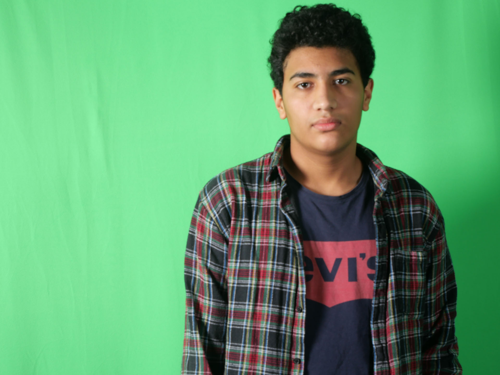

About Me
My name is Alexander Mofre Dos Santos, and I am a student at Kuben high.
I have a goal to become a software engineer and I have always been
enthusiastic about programming software ever since my brother introduced videogame mods to me.
I thought it was cool how people added their own content to games, because of this and my passion for games,
I learnt about coding and i wanted to make my own mods/games.
For me programming is all about solving the problems and create something with code.
My wish is to make programs to help or solve problems that will benefit society and make people happy.
This means I will work hard to get one step closer to my wish.
I can code in 4 different programming languages and these programming languages are Python, HTML, JavaScript and CSS.
My first programming language was Python and today I am quite skilled at coding in Python,
and I can easily find and fix bugs, and solve other issues.
This is beneficial, because Python is the 1. coding language and I can use it for building websites and software,
automate task and conduct data analysis.
I am skilled at web-designing and creating websites and I do have experience using Photoshop.
This means I can design and create good logos and websites for the client.
-Alexander Mofre Dos Santos
